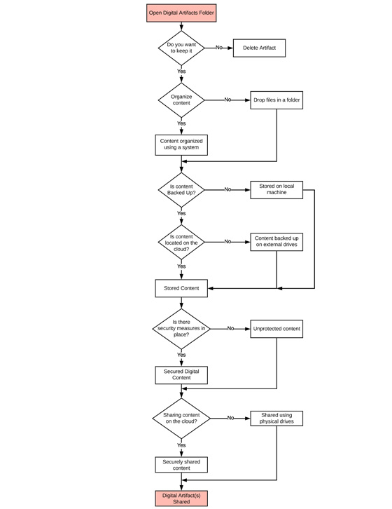

Cloud9
An exploratory research project that aims to understand the user's need for a technology-based solution to help them store, organize, and distribute digital assets post-mortem.
An exploratory research project that aims to understand the user's need for a technology-based solution to help them store, organize, and distribute digital assets post-mortem.

Role
- Creating protocols for participant observations, interviews, and surveys
- Conducting observations, interviews, and surveys
- Analyzing results
- Assimilating reports
Team
- Rahul Kapoor
- Marquis Lawton
- Tanae Burton
- Samantha Wanamaker
Duration
10 weeks
The widespread adoption of technologies and social media brings to question, what will happen to these digital assets (digital photos, videos, documents, etc.) after the users pass away? In this project, we explored user needs for a technology addressing this problem that considers the wishes of the deceased person. We began this project with scenario-based observations of eight participants. Our scenario asked participants to imagine themselves helping their critically ill aunt with their digital assets. We organized our notes from the observations using the AEIOU (activities, environment, interactions, objects, and users) framework.
After performing our observations, we recruited eight new participants to take part in interviews. After receiving consent, we asked them questions about storing/sharing digital assets, potential preparations for assets after passing, and about any accounts they may have. We analyzed our interview by coding, creating an affinity diagram on Mural.com, spectrums, and personas.
In the final stage of our research, we performed a survey with 47 participants. We asked them questions about how their digital assets should be handled after they died, as well as their comfort level with someone else handling them. We also asked if participants were interested in digital memorials created in their honor as well as their social media use. From our findings, we learned that users prefer their artifacts to be handled by the following in order: friends, siblings, then parents. We also learned that users like the idea of memorials but would not want to make one for themselves, and the management of their social media accounts are not very important.
Major implications of the design of our technology are as follows:
• ‘How-to’ guide – All users encountered difficulty when it came to finding information on how to organize social media presence. Based on this finding we would need to have precise instructions or recommendations on how to organize social media accounts when developing and designing this product.
• Consolidation feature – Several users wanted a feature to consolidate their social media accounts.
• Cloud service – All our participants stored their digital assets in the cloud. This finding indicated that our product would have to be a cloud-based product that is easily accessible from the participant’s browsers.
• Dead man’s switch – Users wanted a feature where preselected files and/or accounts will be deleted once they are gone. Any design will need to include a feature where users can select what files or accounts to keep or delete, and a private key that they or a designated individual can input to activate this feature.
• Memorial page creation – From our observations, and interviews we determined that participants had a favorable view towards online memorial pages, and many would like one created for them in the event of their passing. However, the surveys found that only half of the respondents would want to set up a memorial page for themselves. This indicated that our design should include an optional feature of creating a memorial page that will showcase and present digital artifacts that users designate.
We began our exploration by observering how participants would share their loved one's digital artifacts in preparation for their loved one's passing. We recruited eight participants through social media. Due to the Covid-19 epidemic, we conducted our observations through Zoom.
We then sent each participant a document with written instructions and stock photos to for use in a solving a scenario-based problem:
Imagine your aunt, an avid photographer and writer, is critically ill; everyone in the family is distraught and shocked at how swiftly her condition worsened. You, being the most versed in technology, are asked to help your aunt with organizing her digital assets and social media accounts so she can share her collected artifacts with her family and friends when she is gone.
After presenting the scenario, we gave them two tasks: (1) Using the photos we sent earlier, please demonstrate, while sharing your screen, how you would store and share these sentimental digital files, the photo's of your aunt's 50th birthday with your aunt's close family members once she is gone; (2) Show how you would help your aunt organize her social media presence.
From there, we organized our observations into the AEIOU framework to categorize our findings using Stormboard, an online affinity diagramming tool. We then summarized common steps into a flow diagram.
In our observations, we noted that most participants uploaded the stock photos to a cloud service (e.g Google Drive or Adobe Lightroom) in order to share the photos.

Our participants prefered to also use the cloud for storing their digital artifacts, while some also placed the artifacts in a secondary location such as their local computer drive or an external drive. When participants stored the digital artifacts, they created folders and most labled it "Aunt's 50th Birthday" in order to keep their directories organized.

Participants came to various conclusions when deciding how they would organize their aunt's social media and digital artifacts. Three participants stated that they would go through the artifacts with their aunt to choose what to keep and what to delete. While others mentioned creating a memorial page, emailing or storing all the digital assets on the cloud so they could share the link with their family.
Many participants remarked that they did not know how they would go about completing the tasks that were presented. We observed that participants would turn to Google in order to find ideas and some wanted written instructions or checklists on what they should do.
We then created a flow diagram to depict how our participants stored and shared digital artifacts.
